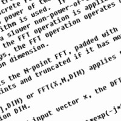
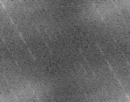
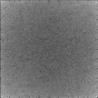
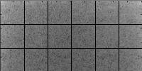

|  | Charger l'image ci-contre sous Matlab. En calculer la transformée de Fourier en 2 dimensions. Pour cela, utiliser le code suivant : imagesc(log(abs(fft2(img)))); avec : abs(fft2(img)) : calcule le spectre (module des coefficients complexes issus de la transformée de Fourier en 2 dimensions), log : permet de ramener les amplitudes des fréquences sur une échelle plus compacte, imagesc : étale les intensités résultantes sur l'ensemble des intensités possibles (i.e. ramène les valeurs entre 0 et 255). |
|  | Vous devriez obtenir une image ayant l'apparence de celle donnée ci-contre. Il s'agit de l'image du spectre en amplitude. Observer l'organisation des intensités maximales. Quelle relation observez-vous entre l'organisation des fréquences d'amplitude maximale et l'orientation du texte ? |
|  |  | ||
| Image de départ (matrice 200x200x3) |
Image en niveaux de gris (matrice 200x200) |
Spectre en amplitude (matrice 200x200) |
Découpage en 18 blocs de la moitié supérieure gauche (matrice 200x100) |